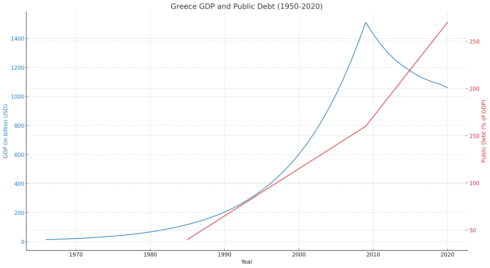

overview of socGrca
description::
× Mcsh-creation: {2023-10-02}
"Greece overview
Greece, officially known as the Hellenic Republic, is a country located in southeastern Europe on the southern tip of the Balkan Peninsula. It has a rich and storied history, being the birthplace of Western civilization, democracy, philosophy, and many other significant contributions to human culture and knowledge. Here's an overview of Greece:
1. Geography:
- Greece is a country characterized by its diverse landscapes, including mountains, islands, and a long coastline along the Mediterranean Sea.
- The country is known for its many islands, with the most famous ones including Crete, Rhodes, Santorini, Mykonos, and Corfu.
2. History:
- Ancient Greece: Greece is often referred to as the cradle of Western civilization due to its influential role in the development of philosophy, literature, art, and science. Prominent ancient Greek city-states included Athens, Sparta, and Corinth.
- Alexander the Great: The famous conqueror Alexander the Great was born in Pella, a city in ancient Macedonia (now part of northern Greece). He created one of the largest empires in history.
- Roman and Byzantine Periods: Greece was part of the Roman Empire and later the Byzantine Empire for many centuries.
- Ottoman Rule: Greece was under Ottoman Turkish rule for nearly 400 years until the Greek War of Independence in the early 19th century.
- Modern Greece: Greece became an independent nation in 1830 and has experienced periods of political instability, including monarchies, republics, and military dictatorships.
3. Culture:
- Greek culture has had a profound impact on the world, particularly in the fields of art, literature, philosophy, and theater. Ancient Greek playwrights like Aeschylus, Sophocles, and Euripides laid the foundation for Western drama.
- Greek cuisine is known for its Mediterranean flavors, with dishes like moussaka, souvlaki, and tzatziki being popular worldwide.
- The Greek Orthodox Church plays a significant role in the country's culture and is the dominant religion.
4. Economy:
- Greece's economy is diverse, with sectors like tourism, shipping, agriculture, and manufacturing contributing to its GDP.
- Tourism is a major industry, attracting millions of visitors annually to its historical sites, beautiful islands, and picturesque landscapes.
5. Politics:
- Greece is a parliamentary republic with a President as the head of state and a Prime Minister as the head of government.
- The country is a member of the European Union, the United Nations, NATO, and other international organizations.
6. Language:
- The official language is Greek, and the Greek alphabet is used for writing.
7. Notable Landmarks:
- Greece is home to numerous ancient ruins, including the Acropolis in Athens, the Temple of Apollo in Delphi, and the Palace of Knossos in Crete.
- The country also boasts beautiful natural landscapes, such as the Meteora rock formations and the Samaria Gorge.
Greece's rich history, stunning landscapes, and cultural contributions make it a popular destination for tourists and a place of enduring significance in the history of human civilization."
[{2023-10-02 retrieved} https://chat.openai.com/c/075fa94a-81a9-4e6c-b94e-b80f45912a30]
name::
* McsEngl.McsStn000030.last.html//dirStn//dirMcsh!⇒socGrca,
* McsEngl.dirStn/McsStn000030.last.html!⇒socGrca,
* McsEngl.Greece!⇒socGrca,
* McsEngl.Hellenic-Republic!⇒socGrca,
* McsEngl.soc4.Grca!=Greece,
* McsEngl.soc4.Greece!=socGrca,
* McsEngl.socElln!=socGrca,
* McsEngl.socGrca!~McsStn000030,
* McsEngl.socGrca!=Hellenic-Republic,
* McsEngl.socGreece!⇒socGrca,
====== lagoChinese:
* McsZhon.xīlà-希腊!=socGrca,
* McsZhon.xīlà-希腊!=socGrca,
* McsZhon.希腊-xīlà!=socGrca,
====== lagoGreek:
* McsElln.Ελλάδα!η!=socGrca,
* McsElln.Ελληνική-Δημοκρατία!η!=socGrca,
human-system of socGrca
description::
× generic: human-system-of-society
· the-subsystem with the-relations of its humans.
name::
* McsEngl.Grcahmns'node-of-humans--of-Greece,
* McsEngl.socGrca'node-of-humans!⇒Grcahmns,
time-zone of socGrca
description::
× Mcsh-creation: {2025-03-17}
· Greece operates on Eastern European Time (EET), which is UTC+2 during standard time. During daylight saving time, it switches to Eastern European Summer Time (EEST), which is UTC+3. [chatgpt]
name::
* McsEngl.socGrca'time-zone,
economic-system of socGrca
description::
× generic: economic-system-of-society
· the-economhy, the-subsystem with the-relations of its satisfiers.
name::
* McsEngl.Grcaecon!=node-of-satisfiers--of-Greece,
* McsEngl.Socecon.014-Greece!⇒Grcaecon,
* McsEngl.Socecon.Greece!⇒Grcaecon,
* McsEngl.economy-of-Greece!⇒Grcaecon,
* McsEngl.socGrca'economy!⇒Grcaecon,
* McsEngl.socGrca'node-of-satisfiers!⇒Grcaecon,
producing-system of Grcaecon
description::
·
name::
* McsEngl.Grcaecon'att001-producing-system,
* McsEngl.Grcaecon'producing-system,
company of Grcaecon
description::
· an-organization that mainly produces satisfiers.
name::
* McsEngl.Grcaecon'att003-production-ozn!=Grcacmpn,
* McsEngl.Grcaecon'production-ozn!=Grcacmpn,
* McsEngl.Grcacmpn!=production-ozn--of-Greece,
Grcacmpn.οργάνωση-κοινωνίας-των-πολιτών
description::
× webaddress: https://okoip.gov.gr/
"Οι Ο.Κοι.Π. είναι μη κρατικές, μη κυβερνητικές, μη κερδοσκοπικές οργανώσεις που ιδρύονται και δραστηριοποιούνται στην Ελλάδα και στηρίζονται στην ιδιωτική πρωτοβουλία.
...Συγκεκριμένα, η καταχώριση στη Δημόσια Βάση Δεδομένων παρέχει οφέλη όπως πρόσβαση στη διεκδίκηση κρατικών χρηματοδοτήσεων έως 50.000 ευρώ ετησίως και φορολογικές ελαφρύνσεις όπως η απαλλαγή από τον ειδικό φόρο ακινήτων και από τον Φ.Π.Α για την παροχή υπηρεσιών και την παράδοση αγαθών με την ευκαιρία εκδηλώσεων. Η καταχώριση στη Δημόσια Βάση Δεδομένων γίνεται μία φορά, με την υποβολή σχετικής αίτησης στην εφαρμογή, την επισύναψη των απαιτούμενων δικαιολογητικών και την καταβολή παραβόλου υπέρ του Δημοσίου ύψους 20 ευρώ.
Αντίστοιχα, η εγγραφή στο Ειδικό Μητρώο απαιτεί επιπρόσθετα δικαιολογητικά όπως αποδεικτικό φορολογικής ενημερότητας, βεβαίωση ασφαλιστικής ενημερότητας και έκθεση ελέγχου ορκωτού λογιστή. Ως εκ τούτου, η εγγραφή σε αυτή τη βάση προσφέρει περαιτέρω οφέλη στις εγγεγραμμένες Ο.Κοι.Π. Παραδείγματος χάριν, εξασφαλίζεται το δικαίωμα διεκδίκησης κρατικών χρηματοδοτήσεων ανεξαρτήτως ποσού και παρέχονται επιπλέον φορολογικά κίνητρα για την ενίσχυση της κοινωφελούς δράσης των εγγεγραμμένων Ο.Κοι.Π."
[{2023-10-18 retrieved} https://www.naftemporiki.gr/society/1526153/okoip-gov-gr-neo-plaisio-diafaneias-kai-logodosias-ton-organoseon-tis-koinonias-ton-politon/]
name::
* McsEngl.Grcaecon'att004-civil-society-organization,
* McsEngl.Grcacmpn.civil-society,
====== lagoGreek:
* McsElln.Οκπ!=οργάνωση-κοινωνίας-των-πολιτών,
* McsElln.Ο.Κοι.Π!=οργάνωση-κοινωνίας-των-πολιτών,
* McsElln.οργάνωση-κοινωνίας-των-πολιτών,
worker of Grcaecon
description::
·
name::
* McsEngl.Grcaecon'att005-worker!⇒Grcawrkr,
* McsEngl.Grcaecon'worker!⇒Grcawrkr,
* McsEngl.Grcawrkr!=worker-of-Greece,
sectorPublic of Grcaecon
description::
·
name::
* McsEngl.Grcaecon'att006-public-sector!⇒GrcasectorPublic,
* McsEngl.Grcaecon'public-sector!⇒GrcasectorPublic,
* McsEngl.GrcasectorPublic!=public-sector-of-Greece,
public-debt of Grcaecon
description::

[{2023-12-12 retrieved} ChatGpt4]
Greece Central-government-debt, total (% of GDP);
* {1997} 109.64,
* {1998} 108.06,
* {1999} 109.02,
* {2000} 119.43,
* {2001} 123.59,
* {2002} 125.62,
* {2003} 120.65,
* {2004} 126.65,
* {2005} 127.54,
* {2006} 126.57,
* {2007} 123.82,
* {2008} 127.15,
* {2009} 143.98,
* {2010} 136.60,
* {2011} 116.21,
* {2012} 168.02,
* {2013} 185.74,
* {2014} 189.29,
* {2015} 189.15,
* {2016} 194.62,
* {2017} 198.96,
* {2018} 208.80,
* {2019} 212.36,
* {2020} 253.11,
* {2021} 237.35,
[{2024-03-09 retrieved} https://data.worldbank.org/indicator/GC.DOD.TOTL.GD.ZS?locations=GR]
* {2014} €360 billion [Gemini]
* {2022} 172.6 %, €356.6 billion ELSTAT [https://www.ot.gr/2023/10/23/english-edition/greek-public-debt-in-2022-totals-172-6-of-gdp-or-356-6-blne/]
* {2022} €404 billion [Gemini]
* {2023} "Αναλυτικότερα, σύμφωνα με τα στοιχεία του Γενικού Λογιστηρίου του Κράτους, το ύψος του ακαθάριστου δημόσιου χρέους, στο τέλος του περασμένου Δεκεμβρίου, σκαρφάλωσε στα 406,52 δισ. ευρώ, από 400,28 δισ. ευρώ, που ήταν στο τέλος Δεκεμβρίου 2022 και από 388,34 δισ. ευρώ, που ήταν στο τέλος του 2021." [https://www.sofokleousin.gr/ekriksi-tou-dimosiou-xreous-to-2023-ayksithike-pano-apo-ta-406-di]
name::
* McsEngl.Grcaecon'att008-public-debt!⇒Grcapublicdebt,
* McsEngl.Grcaecon'public-debt!⇒Grcapublicdebt,
* McsEngl.Grcapublicdebt!=ublic-debt-of-Greece,
sectorPrivate of Grcaecon
description::
·
name::
* McsEngl.Grcaecon'att007-private-sector!⇒GrcasectorPrivate,
* McsEngl.Grcaecon'private-sector!⇒GrcasectorPrivate,
* McsEngl.GrcasectorPrivate!=private-sector-of-Greece,
consuming-system of Grcaecon
description::
·
name::
* McsEngl.Grcaecono'att002-consuming-system,
* McsEngl.Grcaecono'consuming-system,
evoluting of Grcaecon
description::
"The evolution of the Greek economy after World War II can be summarized in several key phases:
1. **Post-WWII Reconstruction (Late 1940s - 1950s)**: Greece's economy in the immediate aftermath of World War II and the Greek Civil War was devastated. With significant aid, primarily through the Marshall Plan, Greece began to rebuild its infrastructure, industries, and economy. This period saw the beginning of modernization and industrialization.
2. **Rapid Growth and Industrialization (1960s - Early 1970s)**: The Greek economy experienced rapid growth during this period, with significant industrialization and urbanization. Tourism started to become a crucial sector, and there was substantial investment in infrastructure.
3. **Political Instability and Economic Challenges (1970s - 1980s)**: The oil crises of the 1970s, along with political instability (including the seven-year military dictatorship that ended in 1974), led to economic challenges, including high inflation and unemployment.
4. **European Union Integration (1981 Onwards)**: Greece joined the European Union (EU) in 1981, which led to increased funding and investment from the EU. This period saw improvements in infrastructure and a gradual modernization of the economy.
5. **Economic Growth and Convergence (1990s - Early 2000s)**: Greece experienced economic growth and began to converge with other EU economies. In 2001, Greece adopted the euro as its currency, which initially led to increased investment and easier access to credit.
6. **Global Financial Crisis and Greek Debt Crisis (Late 2000s - 2010s)**: The global financial crisis of 2007-2008 severely impacted Greece, revealing underlying fiscal and structural problems in its economy. This led to the Greek debt crisis, where Greece required multiple bailouts from the EU and the International Monetary Fund, coupled with strict austerity measures.
7. **Recent Years (Late 2010s - Present)**: The Greek economy has been recovering, albeit slowly, from the debt crisis. Tourism remains a vital sector, and there have been efforts to diversify the economy and invest in technology and renewable energy. The COVID-19 pandemic, however, posed new challenges and setbacks to this recovery.
Each phase of this period is marked by specific economic policies, challenges, and milestones that have shaped the modern Greek economy."
[{2023-12-12 retrieved} ChatGPT4]
name::
* McsEngl.Grcaecon'evoluting,
* McsEngl.evoluting-of-Grcaecon,
admin-system of socGrca
description::
× whole: Eu-governance,
× generic: admin-system-of-society
· the-subsystem with the-relations of its governance-organizations.
"· Greece administration overview:
Greece is a parliamentary republic with a structured system of administration that includes national, regional, and local levels. Here's an overview:
### **1. Political System**
- **Government Type:** Parliamentary Republic
- **Head of State:** **President of the Republic** (ceremonial role, elected by Parliament)
- **Head of Government:** **Prime Minister** (holds executive power, leader of the majority party in Parliament)
### **2. Legislative Branch**
- **Hellenic Parliament (Vouli ton Ellinon)**
- Unicameral (300 members)
- Elections held every four years
- Main responsibilities: passing laws, approving the budget, and overseeing the government
### **3. Executive Branch**
- **Prime Minister:** Appointed by the President, but must have parliamentary support
- **Council of Ministers:** Composed of ministers responsible for various sectors (finance, education, defense, etc.), appointed by the Prime Minister
### **4. Judicial Branch**
- **Independent from executive and legislative branches**
- Key courts:
- **Council of State (Symvoulio tis Epikrateias)** – Administrative cases
- **Supreme Civil and Criminal Court (Areios Pagos)** – Highest court for civil/criminal cases
- **Court of Audit (Elekritiko Synedrio)** – Financial oversight
- **Ordinary Courts** – Handle everyday civil and criminal cases
### **5. Regional and Local Administration**
Greece follows a **decentralized** administrative model with three levels:
#### **a. Decentralized Administration (7 Units)**
- These are state-appointed entities responsible for implementing central government policies.
- Each unit covers multiple regions.
#### **b. Regional Administration (13 Regions)**
- These are self-governing bodies responsible for economic development, infrastructure, and social programs.
- Each region has an elected governor.
#### **c. Local Administration (332 Municipalities)**
- Municipalities are responsible for local services, urban planning, education, and social care.
- Each municipality has an elected mayor and a municipal council.
### **6. Public Sector and Services**
- Greece has a centralized bureaucracy that handles key services like taxation, healthcare, education, and social security.
- The **Independent Authority for Public Revenue (AADE)** manages taxation.
- The **National Organization for Healthcare (EOPYY)** oversees public health services.
### **7. Administrative Reforms**
- The **"Kallikratis Plan" (2010)** and **"Kleisthenis I" (2018)** reformed local government by reducing administrative divisions and increasing regional autonomy.
Would you like details on a specific administrative function, such as taxation, residency permits, or public services?"
[{2025-03-02 retrieved} https://chatgpt.com/c/67c406c2-3ecc-8003-8d29-9b39331b9159]
name::
* McsEngl.GrcaAdmn,
* McsEngl.GrcaAdmn!=governance-of-Greece,
* McsEngl.gvcGreece!⇒GrcaAdmn,
* McsEngl.socGrca'governance!⇒GrcaAdmn,
* McsEngl.socGrca'administration!⇒GrcaAdmn,
====== lagoGreek:
* McsElln.δημόσια-διοίκηση-Ελλάδας!=GrcaAdmn,
government of GrcaAdmn
description::
"Ο πρωθυπουργός και το υπουργικό συμβούλιο αποτελούν την κυβέρνηση, η οποία καθορίζει και κατευθύνει τη γενική πολιτική της χώρας σύμφωνα με το Σύνταγμα.
.. κυβέρνηση (πρόεδρος, πρωθυπουργός, υπουργικό συμβούλιο, δημόσια διοίκηση)."
[{2024-04-09 retrieved} https://dx.doi.org/10.57713/kallipos-420]
"· the components of Government of Greece:
Greece is a parliamentary republic, which means it has a three-branch system of government:
* **Executive Branch:** This branch is responsible for enforcing laws and carrying out the day-to-day functions of government. The President of Greece is the head of state, but the Prime Minister is the head of government and holds most of the executive power.
* **Legislative Branch:** This branch is responsible for making laws. It is made up of a unicameral parliament called the Hellenic Parliament, which has 300 members.
**Judicial Branch:** This branch is responsible for interpreting laws and ensuring that they are applied fairly. The Supreme Court is the highest court in Greece."
[{2024-04-12 retrieved} https://gemini.google.com/app/0fc0ee977f0796c0]
name::
* McsEngl.GrcaAdmn'att001-government!⇒Grcagovt,
* McsEngl.GrcaAdmn'government!⇒Grcagovt,
* McsEngl.Grcagovt!=government-of-Greece,
* McsEngl.government-of-Greece!⇒Grcagovt,
====== lagoGreek:
* McsElln.κυβέρνηση-της-Ελλάδας!=Grcagovt,
president of GrcaAdmn
description::
"The nominal head of state is the President of the Republic, who is elected by the Parliament for a five-year term.[169] According to the Constitution, executive power is exercised by the President and the Government.[169] However, the Constitutional amendment of 1986 curtailed the President's duties and powers to a significant extent, rendering the position largely ceremonial; most political power is thus vested in the Prime Minister, Greece's head of government.[172] The position is filled by the current leader of the political party that can obtain a vote of confidence by the Parliament. The president of the republic formally appoints the prime minister and, on their recommendation, appoints and dismisses the other members of the Cabinet.[169]"
[{2024-04-09 retrieved} https://en.wikipedia.org/wiki/Greece#Politics]
name::
* McsEngl.GrcaAdmn'att002-president!=Grcapresident,
* McsEngl.GrcaAdmn'president!=Grcapresident,
* McsEngl.Grcapresident!=president-of-Greece,
* McsEngl.president-of-Greece!=Grcapresident,
governance-ozn of GrcaAdmn
description::
· oznGovernance is a-special oznSatisfier needed to govern a-society.
name::
* McsEngl.GrcaAdmn'governance-organization!=GrcaogznGovc,
problem of GrcaAdmn
description::
* εκτεταμένη φοροδιαφυγή,
* αυθαίρετη δόμηση,
* αργή απονομή δικαιοσύνης,
* κενά εκπαιδευτικών στα σχολεία μας,
* μικροεγκληματικότητα και η καθημερινή παραβατικότητα σε δρόμους και γειτονιές,
* ανισότητες στην εκπαίδευση,
* κακοί δείκτες δημόσιας υγείας σε συγκεκριμένες περιοχές της χώρας,
* υπερσυνταγογράφηση φαρμάκων που οδηγεί σε πολυφαρμακία χωρίς να βελτιώνει την υγεία των πολιτών,
name::
* McsEngl.GrcaAdmn'problem,
gov.gr of GrcaAdmn
description::
· 11 categories with 1586 digital public services, to help you find exactly what you are looking for.
· Βρείτε τη δημόσια υπηρεσία που θέλετε εύκολα και γρήγορα.
name::
* McsEngl.GrcaAdmn'gov.gr!⇒govgr,
* McsEngl.gov.gr!=govgr!=Ιελκ,
* McsEngl.govgr!=https://www.gov.gr!=Ιελκ,
====== lagoGreek:
* McsElln.Ιελκ!=ιστότοπος-Ελληνικής-κυβέρνησης!=govgr,
* McsElln.ιστότοπος-Ελληνικής-κυβέρνησης!⇒Ιελκ,
* McsElln.ψηφιακή-πύλη-Ελληνικής-κυβέρνησης!⇒Ιελκ,
Εθνικό-Μητρώο-Επικοινωνίας::
× διεύθυνση: https://www.gov.gr/ipiresies/polites-kai-kathemerinoteta/stoikheia-polite-kai-tautopoietika-eggrapha/ethniko-metroo-epikoinonias-emep,
· Αρχική / Πολίτης και καθημερινότητα / Στοιχεία πολίτη και ταυτοποιητικά έγγραφα / Εθνικό Μητρώο Επικοινωνίας,
· Το Εθνικό Μητρώο Επικοινωνίας (Ε.Μ.Επ.) είναι η κεντρική βάση μοναδικής καταχώρισης των στοιχείων επικοινωνίας όλων των πολιτών, την οποία διαχειρίζεται η Γενική Γραμματεία Πληροφοριακών Συστημάτων και Ψηφιακής Διακυβέρνησης του Υπουργείου Ψηφιακής Διακυβέρνησης.
· Καταχωρίστε ηλεκτρονικά τα στοιχεία επικοινωνίας σας στο Εθνικό Μητρώο Επικοινωνίας για να είναι διαθέσιμα στις ηλεκτρονικές συναλλαγές σας με το δημόσιο.
1. Ταχυδρομική διεύθυνση διαμονής και επικοινωνίας
2. Αριθμός σταθερού τηλεφώνου
3. Αριθμός κινητού τηλεφώνου
4. Διεύθυνση ηλεκτρονικού ταχυδρομείου
* McsElln.Ιελκ/Εθνικό-Μητρώο-Επικοινωνίας,
* McsElln.Ε.Μ.Επ.!=Εθνικό-Μητρώο-Επικοινωνίας@Ιελκ,
* McsElln.ΕΜΕπ!=Εθνικό-Μητρώο-Επικοινωνίας@Ιελκ,
* McsElln.Εθνικό-Μητρώο-Επικοινωνίας@Ιελκ,
υπεύθυνη-δήλωση::
× διεύθυνση: https://www.gov.gr/ipiresies/polites-kai-kathemerinoteta/psephiaka-eggrapha-gov-gr/ekdose-upeuthunes-deloses,
· Αρχική / Πολίτης και καθημερινότητα / Ψηφιακά έγγραφα gov.gr / Έκδοση υπεύθυνης δήλωσης
* McsElln.Ιελκ/υπεύθυνη-δήλωση,
* McsElln.έκδοση-υπεύθυνης-δήλωσης@Ιελκ,
* McsElln.υπεύθυνη-δήλωση@Ιελκ,
πιστοποιητικό-οικογενειακής-κατάστασης::
× διεύθυνση: https://www.gov.gr/ipiresies/oikogeneia/oikogeneiake-katastase/pistopoietiko-oikogeneiakes-katastases,
· Αρχική / Οικογένεια / Οικογενειακή κατάσταση / Πιστοποιητικό οικογενειακής κατάστασης
* McsElln.Ιελκ/πιστοποιητικό-οικογενειακής-κατάστασης,
* McsElln.πιστοποιητικό-οικογενειακής-κατάστασης@Ιελκ,
Εαψι|Nada of govgr
description::
× webaddress: https://nationaldigitalacademy.gov.gr/
× webaddress: https://www.gov.gr/ipiresies/ekpaideuse/psephiakes-dexiotetes/psephiake-akademia-politon,
· gov.gr / Εκπαίδευση / Ψηφιακές δεξιότητες / Εθνική ακαδημία ψηφιακών ικανοτήτων
"Πρόκειται για μία πρωτοβουλία του Υπουργείου Ψηφιακής Διακυβέρνησης να αναπτύξει και να συγκεντρώσει εκπαιδευτικό περιεχόμενο, σε ένα σημείο εισόδου, στοχεύοντας στην ανάπτυξη των ψηφιακών δεξιοτήτων όλων των επιπέδων των πολιτών. Στην Εθνική Ακαδημία Ψηφιακών Ικανοτήτων ο πολίτης μπορεί να βρει μαθήματα που θα καλύπτουν τις προσωπικές του ανάγκες και θα συμβάλλουν στη διαμόρφωση του επαγγελματικού του προφίλ ώστε να ανταποκρίνεται στις απαιτήσεις της ψηφιακής εποχής."
[{2023-10-18 retrieved} https://nationaldigitalacademy.gov.gr/]
name::
* McsEngl.Nada!=national-academy-of-digital-abilites@govgr,
* McsEngl.govgr/Nada,
====== lagoGreek:
* McsElln.Εαψι!=εθνική-ακαδημία-ψηφιακών-ικανοτήτων@Ιελκ,
* McsElln.εθνική-ακαδημία-ψηφιακών-ικανοτήτων!⇒Εαψι,
* McsElln.Ιελκ/εθνική-ακαδημία-ψηφιακών-ικανοτήτων,
* McsElln.ψηφιακή-ακαδημία!⇒Εαψι,
ψηφιακός-πολίτης στην Εαψι
description::
× webaddress: https://nadia.gov.gr/
"Το μονοπάτι γνώσης «Ψηφιακός Πολίτης» αποτελεί μία σειρά πέντε μαθημάτων της Εθνικής Ακαδημίας Ψηφιακών Ικανοτήτων. Οδηγεί στην ανάπτυξη βασικών ψηφιακών δεξιοτήτων, ώστε οι πολίτες να μπορούν μέσω του Διαδικτύου να πραγματοποιούν τις απαραίτητες για την καθημερινότητά τους εργασίες. Τα μαθήματα αναπτύσσονται με βάση το Ευρωπαϊκό Πλαίσιο Ψηφιακών Ικανοτήτων (DigiComp). Κάθε μάθημα, περιλαμβάνει μία τελική αξιολόγηση που οδηγεί σε λήψη βεβαίωσης παρακολούθησης"
[{2023-10-18 retrieved} https://nadia.gov.gr/]
name::
====== lagoGreek:
* McsElln.Εαψι/ψηφιακός-πολίτης,
* McsElln.ψηφιακός-πολίτης//Εαψι,
μαθήματα στην Εαψι
description::
* Επικοινωνία και συνεργασία: Κινητές συσκευές, κοινωνικά δίκτυα, εφαρμογές επικοινωνίας, εργασία από το σπίτι,
* Διαδίκτυο: Ασφαλής περιήγηση, μηχανές αναζήτησης, προστασία προσωπικών δεδομένων, ανάπτυξη και αξιολόγηση περιεχομένου,
* Εργαλεία καθημερινής χρήσης: χρήση υπολογιστή, εφαρμογές γραφείου,
* Ψηφιακή επιχειρηματικότητα: Ψηφιακό μάρκετινγκ, σύγχρονο επιχειρηματικό πλαίσιο,
* Επιστήμη υπολογιστών: Ανάπτυξη λογισμικού, ανάπτυξη εφαρμογών διαδικτύου και κινητών συσκευών κ.ά.,
* Τεχνολογίες αιχμής: Yπολογιστικό Νέφος, Τεχνητή Νοημοσύνη, Μηχανική Μάθηση, Μεγάλα Δεδομένα,
name::
* McsEngl.Εαψι/μαθήματα,
* McsEngl.μαθήματα//Εαψι,
IAPR|Ααδε of GrcaAdmn
description::
× διεύθυνση: https://aade.gr,
"The Independent Authority for Public Revenue (IAPR) is the body responsible for collecting public revenue in Greece. It was established in 2016 and consists of various services, including the Tax Offices (TO).
The main objectives of the IAPR are:
* The effective and efficient collection of public revenue
* Ensuring fair and equitable taxation
* Protecting taxpayers from tax evasion and tax avoidance
The IAPR has taken a number of measures to achieve its goals, such as:
* Digitizing its procedures
* Strengthening the control and monitoring of tax compliance
* Cooperating with the relevant authorities to combat tax evasion and tax avoidance
The IAPR has made significant progress in achieving its goals. Public revenue has increased significantly in recent years, while tax compliance has improved. However, the IAPR continues to face some challenges, such as tax evasion and tax avoidance.
The main services of the IAPR are:
* Collection of taxes and duties
* Conducting audits to combat tax evasion and tax avoidance
* Providing services to taxpayers, such as filing tax returns and serving their requests
The IAPR is an important body for the Greek economy. Its effective operation is essential to ensure the sustainability of the public sector and social cohesion.
Specifically, the IAPR's responsibilities include:
* The assessment and collection of taxes, duties, and contributions
* The implementation of tax and customs provisions
* Monitoring taxpayers' tax compliance
* Conducting audits to combat tax evasion and tax avoidance
* Providing services to taxpayers
The IAPR is headquartered in Athens and has offices throughout Greece."
[{2023-10-02 retrieved} https://bard.google.com/chat/fe4da3de78063f47]
name::
* McsEngl.GrcaAdmn'IAPR,
* McsEngl.IAPR,
* McsEngl.IAPR!=Independent-Authority-for-Public-Revenue,
====== lagoGreek:
* McsElln.Ααδε!=Ανεξάρτητη-Αρχή-Δημοσίων-Εσόδων!=IAPR,
Ααδε/αλλαγή-διεύθυνσης::
1. https://www.aade.gr/
2. προς τα κάτω "Μητρώο & Επικοινωνία"
3. ΣΥΝΔΕΣΗ
4. Αλλαγή στοιχείων μητρώου
5. Νέα αίτηση
* McsElln.Ααδε/αλλαγή-διεύθυνσης,
* McsElln.ΔΟΥ/αλλαγή-διεύθυνσης,
* McsElln.αλλαγή-διεύθυνσης@Ααδε,
Ααδε/αίτημα::
1. https://www.aade.gr/
2. προς τα κάτω "Τα αιτήματά μου"
3. ΣΥΝΔΕΣΗ
4. Νέο αίτημα
αιτήματα φορολογίας, Τελωνείου, Γενικό-Χημείο-του-Κράτους,
παίρνουμε τηλέφωνο πρώτα για οδηγίες.
* McsElln.Ααδε/αίτημα,
* McsElln.ΔΟΥ/αίτημα,
* McsElln.αίτημα@Ααδε,
Ααδε/γονική-παροχή-χρημάτων-διατραπεζικά::
· προϋπόθεση: έχει γίνει η μεταφορά χρημάτων και έχουμε τα στοιχεία της μεταφοράς (ημερομηνία, IBAN)
1. https://www.aade.gr/
2. πρώτη μαύρη γραμμή: ΥΠΗΡΕΣΙΕΣ ΠΡΟΣ: Πολίτες ή ΜΕΝΟΥ/Πολίτες
3. Δήλωση Φόρου Μεταβίβασης Ακινήτων, Δωρεάς, Γονικής Παροχής και Κληρονομιάς
4. ΕΙΣΟΔΟΣ ΣΤΗΝ ΕΦΑΡΜΟΓΗ (κωδικοί)
5. Νέα Δήλωση δημιουργία
6. Δήλωση Φόρου Γονικής παροχής/Κινητών/Όχι/Παρέχοντα Γονέα
7. ΑΦΜ/Κατηγορία Α/Στοιχεία Κινητού + (χρηματικά ποσά/μεταξύ τραπεζών/IBAN/ημερομηνία/Αξία/ΕΝΗΜΕΡΩΣΗ)
8. οριστικοποίηση
9. η εφαρμογή στέλνει email στο τέκνο
10. το τέκνο μπαίνει στην εφαρμογή και συμπληρώνει υποβολή|μη-υποβολή
* McsElln.Ααδε/γονική-παροχή-χρημάτων-διατραπεζικά,
* McsElln.γονική-παροχή-χρημάτων-διατραπεζικά@Ααδε,
tax-office|ΔΟΥ of IAPR|Ααδε
description::
"Greek tax offices, also known as DOYs (Δημοτικές Οικονομικές Υπηρεσίες), are the local offices of the Independent Authority for Public Revenue (IAPR). They are responsible for a wide range of tax-related services, including:
* Accepting and processing tax returns
* Collecting taxes and duties
* Providing information and assistance to taxpayers
* Conducting tax audits
DOYs are organized geographically, with each DOY serving a specific area. Taxpayers are required to register with the DOY in the area where they live or have their business.
To register with a DOY, taxpayers must submit a tax registration application (AFM application). This application can be submitted online or in person at the DOY. Once registered, taxpayers will be assigned a tax registration number (AFM), which is used for all tax-related transactions.
Taxpayers can access a variety of services online through the IAPR website. These services include:
* Filing tax returns
* Paying taxes
* Viewing tax assessments
* Requesting tax certificates
* Making appointments with DOY staff
However, some services, such as tax audits, can only be performed in person at a DOY.
DOYs are open to the public from Monday to Friday, from 8:00 AM to 3:00 PM. Taxpayers can also contact their DOY by phone or email.
Here are some tips for interacting with Greek tax offices:
* Be prepared. When visiting a DOY, be sure to bring all of the required documentation, such as your tax registration number, tax returns, and receipts.
* Be polite and respectful. DOY staff are there to help you, but they are also busy people. Be polite and respectful, and they will be more likely to help you quickly and efficiently.
* Be patient. DOYs can be busy places, especially during tax season. Be patient and understanding if there is a wait.
If you have any questions or concerns about your taxes, you should contact your DOY for assistance."
[{2023-10-02 retrieved} https://bard.google.com/chat/fe4da3de78063f47]
name::
* McsEngl.Grcato!=Greek-tax-office,
* McsEngl.IAPR'tax-office!⇒Grcato,
* McsEngl.tax-office//IAPR!⇒Grcato,
====== lagoGreek:
* McsElln.ΔΟΥ!=Δημόσια-Οικονομική-Υπηρεσία,
* McsElln.εφορία!η!⇒ΔΟΥ,
income-tax-report|φορολογική-δήλωση of IAPR|Ααδε
description::
An income tax report in Greece is a document that individuals and businesses are required to submit to the Greek tax authorities each year. The income tax report declares all of the taxpayer's income and expenses for the previous year, and it is used to calculate the taxpayer's tax liability.
name::
* McsEngl.income-tax-report@IAPR,
====== lagoGreek:
* McsElln.Ε1-δήλωση-φορολογίας-εισοδήματος!⇒Φδ,
* McsElln.δήλωση-φορολογίας-εισοδήματος!⇒Φδ,
* McsElln.Φδ!=φορολογική-δήλωση@Ααδε,
* McsElln.φορολογική-δήλωση@Ααδε!=Φδ,
φορολογικό-έτος::
· φορολογικό-έτος είναι το έτος απόκτησης εισοδημάτων, όχι το έτος υποβολής της δήλωσης (οικονομικό-έτος).
* McsElln.Φδ/φορολογικό-έτος,
* McsElln.φορολογικό-έτος@Φδ,
οικονομικό-έτος::
· οικονομικό-έτος είναι το έτος υποβολής της δήλωσης, όχι το έτος απόκτησης εισοδημάτων (φορολογικό-έτος).
* McsElln.Φδ/οικονομικό-έτος,
* McsElln.οικονομικό-έτος@Φδ,
ΜΣΣ::
· ΜΣΣ = μέλος συμφώνου συμβίωσης.
* McsElln.Φδ/ΜΣΣ!=μέλος-συμφώνου-συμβίωσης,
* McsElln.ΜΣΣ!=μέλος-συμφώνου-συμβίωσης@Φδ,
κωδικός::
* 007-008: πίνακας1, Φιλοξενείτε ΦΠ υπόχρεο σε δήλωση εκτός εκείνων του πίνακα 8,
* 049-050: πίνακας7, Δαπάνη αγοράς αγαθών και παροχής υπηρεσιών με ηλεκτρονικά μέσα πληρωμής,
* 204-205: πίνακας51α, Αρ. παρ. ρεύματος,
* 208-217: πίνακας51α, ΤΚ,
* 211-218: πίνακας51α, Επιφάνεια κυρίων χώρων,
* 212-219: πίνακας51α, Επιφάνεια βοηθητικών χώρων,
* 213-214|220-221: πίνακας51α, Πoσoστό συνιδιοκτησίας ή χρήσης,
* 215-222: πίνακας51α, Μήνες ιδιοκατοίκησης,
* 240-241: πίνακας51α, Μονοκατοικία,
* 301-302: πίνακας4Α, Άθροισμα καθαρών ποσών από μισθούς, ημερομίσθια κ.λπ. (εκτός περ. 2, 3),
* 303-304: πίνακας4Α, Άθροισμα καθαρών ποσών από κύριες συντάξεις (εκτός περ. 1, 3),
* 315-316: πίνακας4Α, Φόρος που παρακρατήθηκε στους μισθούς, συντάξεις, αμοιβές μελών ΔΣ (περ. 1, 2, 3, 4 & 19),
* 321-322: πίνακας4Α, Άθροισμα καθαρών ποσών από επικουρικές συντάξεις, μερίσματα κ.λπ. (εκτός περ. 1, 2),
* 333-334: πίνακας4Α, Ποσό που παρακρατήθηκε για ειδική εισφορά αλληλεγγύης του άρθρου 43Α ΚΦΕ,
* 667-668: πίνακας4Δ1, Τόκοι (προ φόρου) ημεδαπής προέλευσης,
* 675-676: πίνακας4Δ1, Φόρος που παρακρατήθηκε για τόκους ημεδαπής προέλευσης,
* 703-704: πίνακας51γ, Κυβικά εκατ.,
* 761-762: πίνακας51γ, Μήνες κυριότητας,
* 771-772: πίνακας51γ, Ποσοστό συνιδιοκτ. %,
* 775-776: πίνακας51γ, Έτος πρώτης κυκλοφορίας,
* 840-841: πίνακας51γ, ΑΦΜ κύριου ή κάτοχου ΕΙΧ, ΜΧ,
* 851-853: πίνακας51γ, Υπόχρεου1,
* 852-854: πίνακας51γ, Υπόχρεου2,
* McsElln.Φδ/κωδικός,
* McsElln.κωδικός@Φδ,
organization of socGrca
description::
· system of humans with "middle" relations.
name::
* McsEngl.Grcaogzn!=organization-of-Greece,
* McsEngl.socGrca'organization!⇒Grcaogzn,
place of socGrca
forest-area of socGrca
description::
"Forest area (% of land area) of Greece
The forest area (% of land area) of Greece is 30.27% as of 2021, according to the World Bank collection of development indicators. This means that 30.27% of Greece's total land area is covered by forests.
Greece has a wide variety of forests, ranging from the dense coniferous forests of the north to the open oak forests of the south. The country's forests are home to a wide variety of plants and animals, including many rare and endangered species.
Greece's forests play an important role in the country's economy and environment. They provide wood and other forest products, they help to regulate the climate, and they protect soil and water resources.
The Greek government is committed to the sustainable management of its forests. The country has a number of policies in place to protect its forests and to promote sustainable forest management.
Here are some of the benefits of forests:
* Forests provide clean air and water.
* Forests help to regulate the climate.
* Forests protect soil and water resources.
* Forests provide habitat for wildlife.
* Forests provide wood and other forest products.
* Forests support recreation and tourism.
We all have a role to play in protecting forests. We can do this by supporting sustainable forest management practices, by planting trees, and by reducing our consumption of paper and other forest products."
[{2023-10-04 retrieved} https://bard.google.com/chat/6eeac4dbe9b6e921]
name::
* McsEngl.forest-of-Greece,
* McsEngl.socGrca'forest-area,
info-resource of socGrca
description::
*
name::
* McsEngl.socGrca'InfRsc,
DOING of socGrca
description::
*
name::
* McsEngl.socGrca'doing,
evoluting of socGrca
description::
"· evolution of Greece:
The evolution of Greece spans thousands of years, from its prehistoric beginnings to its modern status as a democratic nation. Greece is considered the birthplace of Western civilization, and its history has had a profound impact on the world.
**Prehistoric Greece**
The first evidence of human habitation in Greece dates back to the Paleolithic period, around 270,000 BC. The Neolithic period, which began around 7000 BC, saw the development of agriculture and the first permanent settlements. The Bronze Age, which began around 3200 BC, was characterized by the rise of the Cycladic, Minoan, and Mycenaean civilizations. These civilizations were highly advanced and produced some of the most impressive art and architecture of the ancient world.
**Ancient Greece**
The Archaic period (800-500 BC) saw the rise of the city-state, or polis. The polis was a self-governing community that was both a political and social unit. The most famous of the Greek city-states were Athens and Sparta. Athens was a democracy, while Sparta was an oligarchy. Both Athens and Sparta made significant contributions to Greek culture and civilization.
The Classical period (500-323 BC) was a time of great intellectual and artistic flourishing in Greece. Some of the greatest philosophers, historians, poets, playwrights, and sculptors of the ancient world lived during this period. The Classical period also saw the expansion of Greek power and influence throughout the Mediterranean world.
The Hellenistic period (323-31 BC) began with the death of Alexander the Great and the division of his empire. The Hellenistic period was a time of cultural and economic exchange between Greece and the rest of the Mediterranean world. It was also a time of political instability, as the Greek city-states struggled to maintain their independence against the rise of Rome.
**Roman Greece**
Greece was conquered by Rome in 146 BC. Under Roman rule, Greece experienced a period of peace and prosperity. Greece also adopted Roman culture and language. However, Greece never lost its sense of identity, and the Greek language and culture continued to be spoken and practiced throughout the Roman Empire.
**Byzantine Greece**
The Byzantine Empire, which was also known as the Eastern Roman Empire, was founded in 330 AD. The Byzantine Empire was a Christian empire that was centered on the city of Constantinople (now Istanbul). The Byzantine Empire was a major power in the Mediterranean world for over a thousand years. It was a center of learning and culture, and it preserved many of the achievements of ancient Greece.
**Ottoman Greece**
The Byzantine Empire was conquered by the Ottoman Turks in 1453. Greece remained under Ottoman rule for over four hundred years. During this time, Greece experienced a period of economic and cultural decline. However, the Greek people never gave up their hope for freedom.
**Modern Greece**
Greece finally gained its independence from the Ottoman Empire in 1832. Since then, Greece has been a democratic republic. Greece has faced a number of challenges in its modern history, including economic instability and political turmoil. However, Greece has also made significant progress in recent years, and it is now a member of the European Union.
**Timeline of Greek History**
* 270,000 BC: First evidence of human habitation in Greece
* 7000 BC: Neolithic period begins
* 3200 BC: Bronze Age begins
* 800 BC: Archaic period begins
* 500 BC: Classical period begins
* 323 BC: Hellenistic period begins
* 146 BC: Greece conquered by Rome
* 330 AD: Byzantine Empire founded
* 1453: Byzantine Empire conquered by Ottoman Turks
* 1832: Greece gains independence from the Ottoman Empire
* 1981: Greece joins the European Union
**Conclusion**
The evolution of Greece is a complex and fascinating story. Greece has made significant contributions to Western civilization, and its history continues to be studied and admired today."
[{2023-11-28 retrieved} https://bard.google.com/chat/2a05116dba4bc0a9?hl=en&pli=1]
name::
* McsEngl.evoluting-of-socGrca,
* McsEngl.socGrca'evoluting,
{2023-10-02}::
=== McsHitp-creation:
· creation of current concept.
PARENT-CHILD-TREE of socGrca
parent-tree-of-socGrca::
* ,
* McsEngl.socGrca'parent-tree,
child-tree-of-socGrca::
* ,
* McsEngl.socGrca'child-tree,
WHOLE-PART-TREE of socGrca
whole-tree-of-socGrca::
* socEus,
* ... Sympan.
* McsEngl.socGrca'whole-tree,
* McsEngl.socGrca//socEus,
part-tree-of-socGrca::
* ,
* McsEngl.socGrca'part-tree,
GENERIC-SPECIFIC-TREE of socGrca
generic-tree-of-socGrca::
* ,
* ... entity.
* McsEngl.socGrca'generic-tree,
specific-tree-of-socGrca::
* ,
* McsEngl.socGrca.specific-tree,